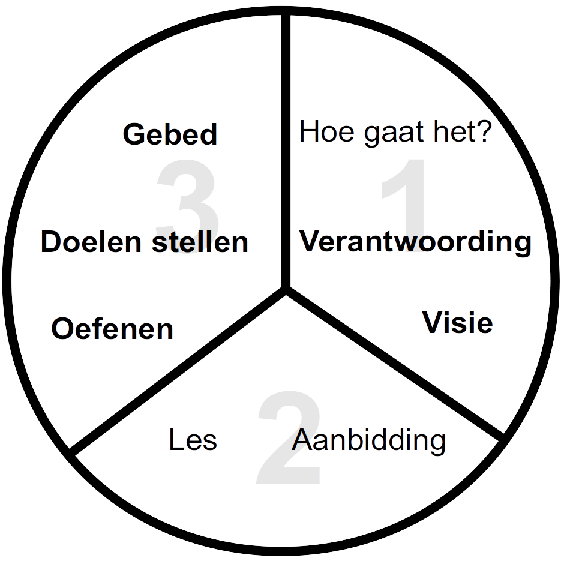

<h1>Drie delen proces</h1>
<div style="margin-right:25px;float:left">
</div>
<p><i>Voor meer details over hoe je dit kan gebruiken kijk bij:  <a href="/Training_Meeting_Outline/nl">Trainingsoverzicht</a>.</i>
</p>
<ol><li>Hoe gaat het?</li>
<li><b>Verantwoording</b></li>
<li><b>Visie</b></li>
<li>Aanbidden</li>
<li>Les</li>
<li><b>Oefenen</b></li>
<li><b>Doelen stellen</b></li>
<li><b>Gebed</b></li></ol>
<p><br/>
</p><p><br/>
</p>